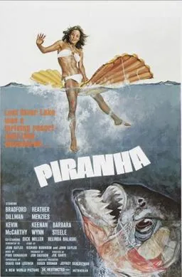

The genetics
Genetic engineering creates the film's monsters. Under the secret military project Operation Razorteeth, the scientist Dr. Robert Hoak engineered a strain of piranhas that were ravenous, fast-breeding and able to survive cold and salt water, as a weapon to slow down the Viet Cong on Vietnamese rivers. When the war ended the project was cancelled, but Hoak kept the fish alive to save his work. Hoak is a haggard, tragic figure who is killed by his own creatures, while the military and Dr. Mengers, another Razorteeth scientist, are shown as more interested in a cover-up than in protecting people. The film is a satirical Jaws imitation, and its target is military secrecy as much as reckless science. Real piranhas cannot be bred for such traits quickly, and the engineering is never explained; it is a premise that turns an exotic fish into a threat to American summer resorts.
How genetics is portrayed
- Overall portrayal of genetics
- negative Military genetic engineering produces a deadly weapon that escapes and is then covered up; the film ends with the official spin, a satirical and ominous note.
- Outcome of the genetic intervention
- negative The engineered piranhas escape and kill teenagers, Hoak, Waxman, a camp counsellor and many vacationers before they are destroyed.
- Dr. Robert Hoak
- ambivalent Aim: military, curiosity (negative). He engineered the piranhas as a weapon against the Viet Cong and secretly kept them alive to salvage his work after the project ended. The film presents him as a haggard, tragic figure who tries to warn the heroes and dies rescuing a boy from his own creations.
- Operation Razorteeth military (Colonel Waxman and Dr. Florence Mengers)
- villain Aim: military (negative). The military commissioned the weapon programme and, when the fish escape, ignores warnings, detains Paul and Maggie and covers up the threat. Waxman dies in the resort attack and Mengers is shown spinning a false account on television, a satirical condemnation.
The story
Two teenagers who swim in a pool at an abandoned military compound near Lost River Lake are killed. Skip tracer Maggie McKeown, sent to find them, hires the backwoodsman Paul Grogan as a guide and drains the pool, unaware that she is releasing its occupants into the river. The haggard scientist living there, Dr. Robert Hoak, reveals that the pool held piranhas engineered during the Vietnam War for Operation Razorteeth. Hoak is killed by the fish while rescuing a boy. Paul stops the dam from being opened, but the military, led by Colonel Waxman and the former Razorteeth scientist Dr. Florence Mengers, tries to poison the fish and holds Paul and Maggie to keep the story quiet. The piranhas attack a summer camp and a lakeside resort. Paul and Maggie kill them with waste from a smelting plant, while Mengers plays down the events on television.